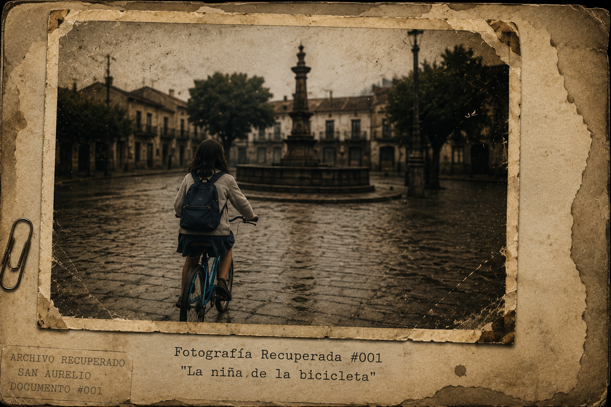
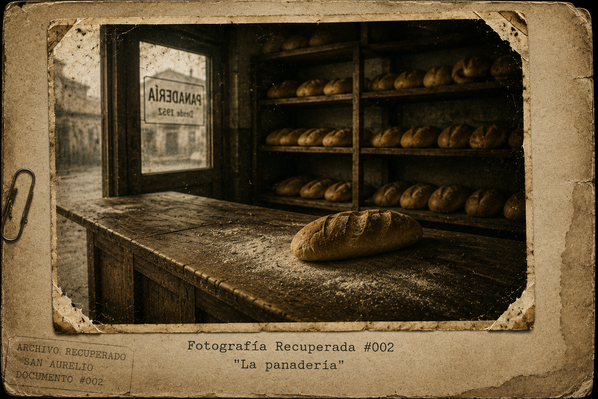
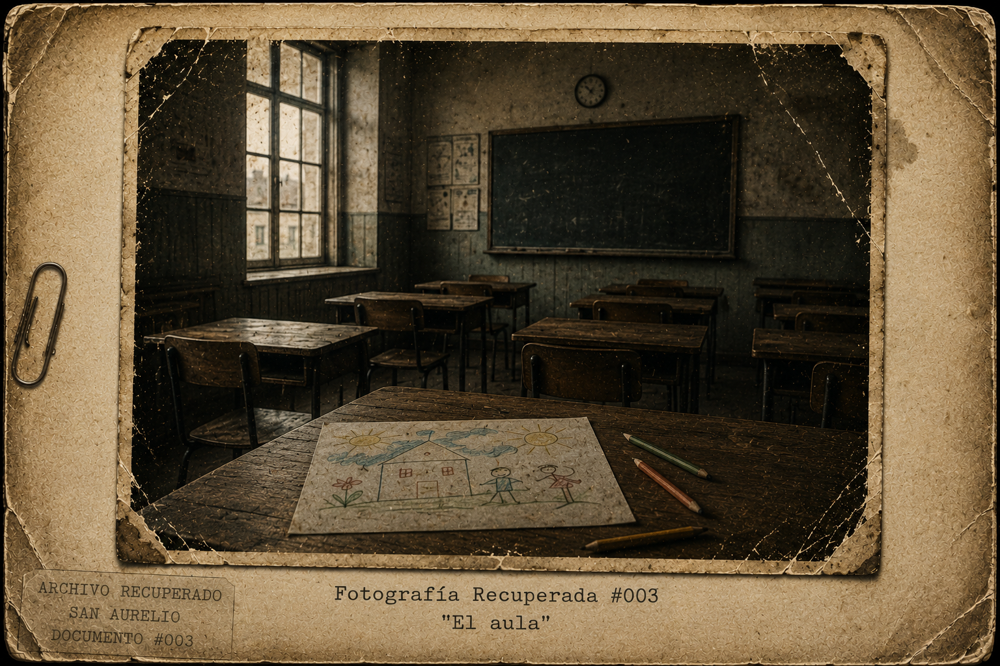
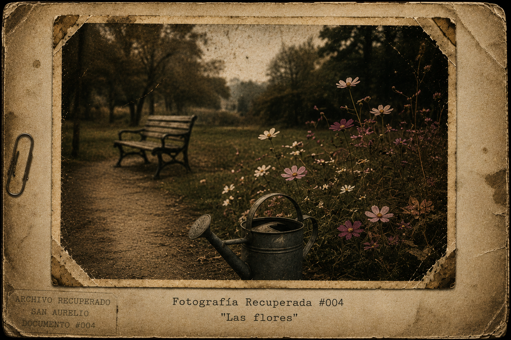
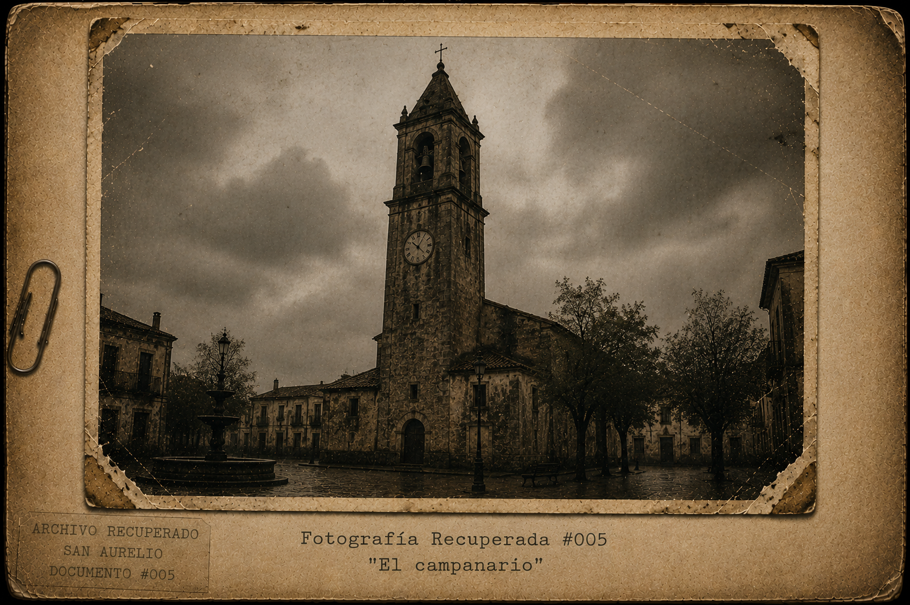
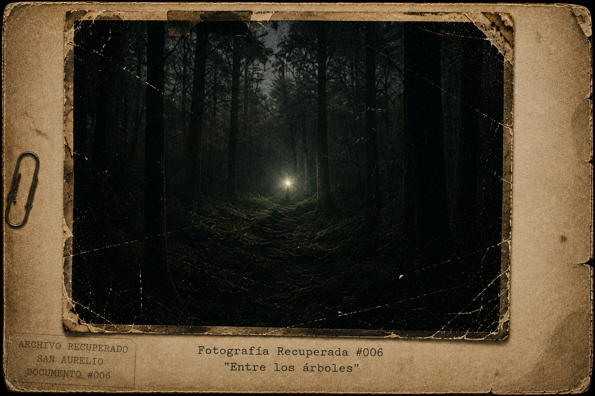
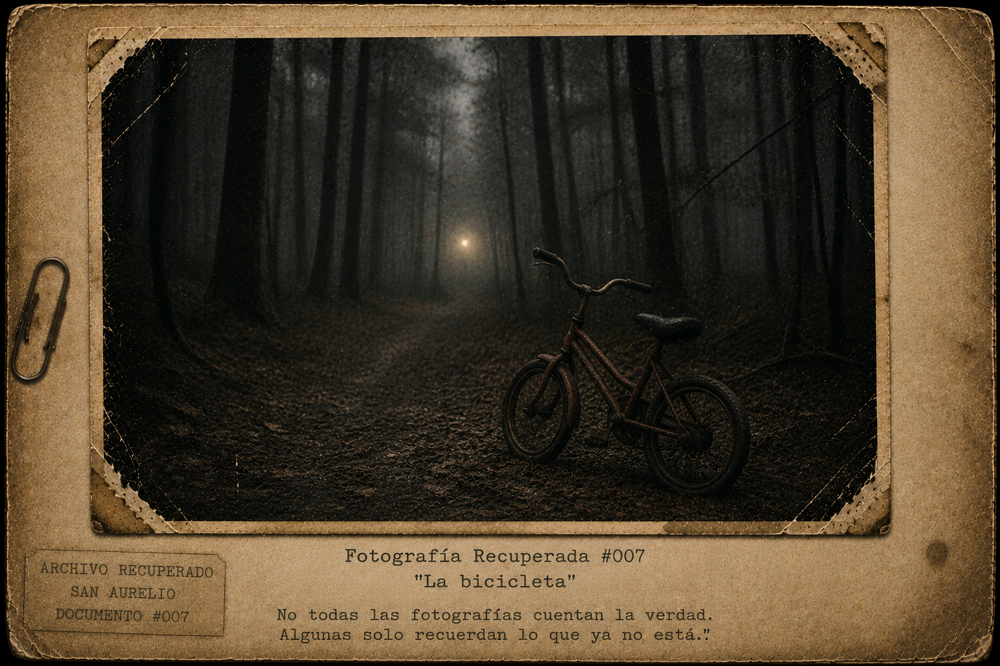

Capítulo 0
Antes del Silencio
Volumen I · Las voces que nadie escuchó
ARCHIVO RECUPERADO #001
Procedencia: Desconocida.
Fecha estimada de los acontecimientos: Primavera de 2010.
Fecha de recuperación del material: Año 2026.
Estado del documento: Parcialmente conservado.
Observaciones
Parte de los documentos relacionados con San Aurelio fueron encontrados en condiciones irregulares.
La mayoría presentaba daños provocados por humedad, fuego o deterioro natural.
Algunos fragmentos resultaron imposibles de recuperar.
Otros parecían haber sido alterados.
Sin embargo, ciertos documentos permanecieron intactos.
Este manuscrito es uno de ellos.
No contiene firma.
No contiene fecha.
No menciona quién lo escribió.
Pero todas las referencias encontradas apuntan hacia un mismo lugar.
Y hacia una mismapersona.
Una niña llamada Irene.
Nota del Archivista
No existen registros oficiales que expliquen los acontecimientos relacionados con la hora 11:47.
Sin embargo, los testimonios recuperados coinciden en un detalle inquietante.
Todos hablan de un día que cambió para siempre a los habitantes de San Aurelio.
Este documento corresponde al inicio de esos acontecimientos.
Clasificación: Restringida.
Acceso autorizado únicamente para fines de investigación.
"No todas las historias deben ser olvidadas.
Algunas existen para recordarnos lo que fuimos capaces de perder."
Fotografía Recuperada #001
"La niña de la bicicleta"

En San Aurelio nadie hablaba de las once cuarenta y siete.
No porque fuera una hora importante.
No porque hubiera ocurrido algo especial.
Al menos eso decían.
Sin embargo, cuando el campanario marcaba aquella hora, algunas personas evitaban levantar la vista.
Otras cerraban las ventanas.
Algunas cambiaban de tema.
Y unas pocas fingían no haber escuchado nunca hablar de ello.
La ciudad continuaba funcionando.
Las tiendas abrían.
Los niños asistían a la escuela.
Los vecinos se saludaban en la plaza.
Todo parecía normal.
Pero San Aurelio había aprendido hacía mucho tiempo que las cosas podían parecer normales sin serlo.
Porque los pueblos guardan secretos.
Y algunos secretos permanecen ocultos durante generaciones.
Esperando.
Observando.
Recordando.
Irene siempre intentaba evitar las grietas del camino.
No porque creyera que daban mala suerte.
Ni porque alguien se lo hubiera enseñado.
Simplemente le parecían tristes.
Cada vez que veía una grieta imaginaba que algo había intentado romperse y no lo había conseguido por completo.
Por eso movía el manubrio de la bicicleta de un lado a otro.
Esquivándolas.
Como si pudiera ayudarlas.
Aquella mañana había contado diecisiete.
Diecisiete grietas.
Dos perros.
Tres gatos.
Y una nube que parecía un conejo.
Irene sonrió.
Era importante recordar esas cosas.
Los adultos siempre parecían demasiado ocupados para hacerlo.
Pedaleó lentamente alrededor de la plaza principal.
Las ruedas crujían sobre las piedras húmedas.
A su alrededor, San Aurelio despertaba.
Las persianas se abrían.
Las puertas comenzaban a moverse.
El aroma del pan recién horneado recorría las calles.
Todo parecía tranquilo.
Pero Irene sabía que las apariencias engañaban.
Lo había aprendido en casa.
Su madre sonreía cuando había visitas.
Su padre preguntaba cómo había ido la escuela.
Durante unos minutos todo parecía estar bien.
Luego las puertas se cerraban.
Y los gritos regresaban.
Irene bajó la mirada.
No le gustaba pensar en eso.
Por eso prefería contar grietas.
O nubes.
O gatos.
Las cosas simples eran más fáciles de entender.
Irene: —Buenos días, señor Carlos.
Carlos: —Buenos días, Irene.
La niña siguió avanzando.
No vio que Carlos permaneció observándola varios segundos después.
No vio la tristeza escondida detrás de aquella sonrisa.
No vio el recuerdo que acababa de despertar.
Porque algunas heridas aprenden a esconderse demasiado bien.
Más adelante encontró a Héctor sentado en una banca.
Como siempre.
Rodeado de palomas.
Irene: —Buenos días, señor Héctor.
Héctor: —Buenos días, pequeña.
Las palomas continuaron picoteando las migas de pan.
Irene dudó unos segundos.
Irene: —¿Y María?
El silencio apareció inmediatamente.
La niña comprendió su error demasiado tarde.
María ya no estaba.
Había olvidado que algunas ausencias nunca dejan de doler.
Irene: —Lo siento.
Héctor sonrió apenas.
Una sonrisa cansada.
Héctor: —No te preocupes.
Irene asintió.
Volvió a subir a la bicicleta.
Y siguió su camino.
Mientras se alejaba miró una última vez hacia la banca.
Héctor seguía allí.
Hablando con las palomas.
Como si fueran viejas amigas.
Como si fueran las únicas que todavía lo escuchaban.
Y por alguna razón aquello le produjo tristeza.
Una tristeza pequeña.
De esas que permanecen durante todo el día.
La niña aceleró el pedaleo.
No sabía por qué.
Pero tenía la sensación de que algo estaba cambiando.
Algo que todavía no podía ver.
Algo que todavía no podía entender.
Y aunque no lo sabía...
San Aurelio también parecía sentirlo.
Fotografía Recuperada #002
"La panadería"

Carlos siempre preparaba una barra de pan de más.
Nadie la compraba.
Nadie la pedía.
Nadie sabía siquiera que existía.
Aun así, cada mañana la colocaba sobre el mismo rincón del mostrador.
A la misma hora.
En el mismo lugar.
Y después fingía olvidarla.
Llevaba años haciéndolo.
Tantos que ya no recordaba cuándo había comenzado.
Aquella mañana ocurrió lo mismo.
Sacó las bandejas del horno.
El aroma del pan recién horneado llenó el local.
El calor envolvió las paredes.
Y allí estaba.
La barra extra.
Esperándolo.
Carlos permaneció inmóvil.
Luego la tomó entre las manos.
Todavía estaba caliente.
Y durante un instante recordó una risa.
Una voz.
Unas manos cubiertas de harina.
Una niña sentada sobre el mostrador.
La hija de Carlos, en el recuerdo: —Papá, esta quedó torcida.
Carlos, en el recuerdo: —Las mejores siempre quedan torcidas.
La imagen desapareció tan rápido como había llegado.
Carlos cerró los ojos.
Aquella conversación nunca había ocurrido realmente.
O tal vez sí.
Con los años, los recuerdos terminan mezclándose con aquello que uno hubiera querido decir.
Dejó el pan en su lugar.
Miró por la ventana.
La plaza comenzaba a llenarse.
Y entre toda la gente distinguió a Irene alejándose en bicicleta.
Por un instante sintió algo extraño.
Como una preocupación.
Como un presentimiento.
Algo pequeño.
Algo absurdo.
Pero suficiente para que siguiera observando incluso después de que la niña desapareciera al doblar la esquina.
No sabía por qué.
Solo tenía la sensación de que aquel día no sería como los demás.
Fotografía Recuperada #003
"El aula"

Mily llegó a la escuela diez minutos antes que el resto.
Como siempre.
Le gustaba el silencio de las aulas vacías.
Era uno de los pocos momentos del día en los que todo parecía estar en orden.
Abrió la puerta.
Las mesas permanecían alineadas.
La pizarra seguía limpia.
Los primeros rayos de sol atravesaban las ventanas.
Y durante unos segundos el aula pareció perfecta.
Mily sonrió.
Luego dejó su bolso sobre el escritorio.
Tenía veintinueve años.
Algunas personas todavía la llamaban “la nueva profesora”, aunque llevaba varios años trabajando allí.
Otras decían que era demasiado joven para enseñar.
Ella nunca discutía.
Había aprendido que las personas siempre encuentran algo que decir.
Mientras organizaba unos cuadernos encontró un dibujo olvidado.
Una casa.
Dos personas tomadas de la mano.
Un árbol.
Y un sol enorme ocupando media hoja.
Mily observó el papel durante varios segundos.
Después sonrió otra vez.
Los niños tenían una forma extraña de ver el mundo.
Todavía creían que las cosas podían arreglarse.
Todavía creían que las personas permanecían para siempre.
A veces los envidiaba.
Sacó el teléfono.
Había un mensaje nuevo.
Era de Daniel.
Su esposo.
“¿Recordaste desayunar o vas a sobrevivir solo con café otra vez?”
Mily soltó una pequeña risa.
Tecleó una respuesta.
“Estoy desayunando.”
Era mentira.
La respuesta llegó casi de inmediato.
“Mentira.”
Mily negó con la cabeza.
Después guardó el teléfono.
Aquellas conversaciones pequeñas eran una de las razones por las que los días difíciles seguían siendo soportables.
Daniel siempre encontraba una forma de hacerla sonreír.
Incluso cuando ella no tenía ganas.
Miró nuevamente el dibujo.
La casa.
El árbol.
Las dos personas.
Por alguna razón sintió una punzada extraña en el pecho.
Algo breve.
Casi imperceptible.
Como un recuerdo que todavía no había ocurrido.
Frunció el ceño.
Luego dejó el dibujo sobre el escritorio.
Las voces de los niños comenzaron a escucharse en el pasillo.
La escuela despertaba.
Y por primera vez aquella mañana, Mily tuvo la sensación de que algo estaba a punto de cambiar.
No sabía qué.
No sabía cuándo.
Pero la sensación permaneció allí.
Silenciosa.
Esperando.
Fotografía Recuperada #004
"Las flores"

Esmeralda regaba las flores cada mañana.
Era una costumbre antigua.
Tan antigua que ya no recordaba cuándo había comenzado.
Quizá diez años.
Quizá veinte.
Quizá toda una vida.
El agua caía lentamente sobre los pétalos.
Las flores parecían inclinarse para recibirla.
A Esmeralda le gustaba pensar que las plantas escuchaban.
Que guardaban secretos.
Que recordaban cosas que las personas terminaban olvidando.
Por eso les hablaba a veces.
Cuando nadie la observaba.
Aquella mañana ocurrió lo mismo.
Tomó la regadera.
Recorrió el jardín.
Y comenzó a trabajar.
El aire olía a tierra húmeda.
El viento movía suavemente las ramas de los árboles.
Todo parecía tranquilo.
Sin embargo, al llegar al último cantero se detuvo.
Había una flor nueva.
Pequeña.
Blanca.
No recordaba haberla plantado.
Frunció el ceño.
Se inclinó para observarla mejor.
Y por alguna razón sonrió.
Aquella flor le resultaba familiar.
Como una canción escuchada hace mucho tiempo.
Como una voz olvidada.
Como un recuerdo que se negaba a desaparecer.
Esmeralda levantó la vista.
Los árboles permanecían inmóviles.
El sendero estaba vacío.
Y aun así tuvo la sensación de que alguien acababa de marcharse.
No era miedo.
No era tristeza.
Era algo diferente.
Algo más difícil de explicar.
Como cuando uno espera una llamada que nunca llega.
O una visita que se ha retrasado demasiado.
Permaneció inmóvil unos segundos.
Escuchando.
Esperando.
Pero no ocurrió nada.
Solo el viento.
Solo las hojas.
Solo el silencio.
Finalmente volvió a regar las flores.
Aunque la sensación no desapareció.
Y mientras continuaba trabajando, una idea cruzó su mente.
Una idea absurda.
Una idea imposible.
La misma idea que regresaba cada ciertos años.
¿Qué ocurriría si algún día alguien regresara?
Esmeralda bajó la mirada.
Y continuó regando.
Como si nunca hubiera pensado en ello.
Fotografía Recuperada #005
"El campanario"

En San Aurelio las campanas ya no sonaban.
Nadie recordaba exactamente cuándo habían dejado de hacerlo.
Algunos decían que fue por una tormenta.
Otros culpaban al paso del tiempo.
Y unos pocos aseguraban que simplemente decidieron callar.
Como el resto del pueblo.
El campanario seguía allí.
Elevándose sobre los techos.
Observando las calles.
Observando la plaza.
Observando a las personas que fingían que nada ocurría.
Las agujas del reloj continuaban avanzando.
Lentas.
Implacables.
Como si el tiempo fuera la única cosa que todavía funcionaba correctamente.
Aquella mañana el cielo permanecía despejado.
Las nubes avanzaban despacio.
Los niños corrían por las calles.
Los comerciantes abrían sus negocios.
Todo parecía normal.
Pero San Aurelio llevaba años perfeccionando la apariencia de normalidad.
Era una ciudad experta en eso.
Una ciudad experta en ocultar.
Las agujas avanzaron.
11:45.
Nadie levantó la vista.
11:46.
Una ráfaga de viento recorrió la plaza.
Las hojas secas comenzaron a moverse.
Algunas personas sintieron un escalofrío.
No supieron explicar por qué.
11:47.
Entonces ocurrió algo extraño.
Nada.
Absolutamente nada.
El reloj continuó avanzando.
Las personas siguieron caminando.
Los pájaros siguieron cantando.
Los negocios continuaron abiertos.
Y precisamente por eso resultaba inquietante.
Porque algo parecía faltar.
Como una palabra olvidada en medio de una conversación.
Como una nota ausente en una canción.
Como si la ciudad estuviera esperando algo.
O a alguien.
Muy lejos de la plaza, Irene levantó la vista hacia el campanario.
No sabía por qué.
Simplemente lo hizo.
Las agujas marcaban exactamente las 11:47.
Y durante un instante sintió algo.
No fue miedo.
No fue tristeza.
Fue una sensación diferente.
Una sensación que desapareció tan rápido como llegó.
Como si alguien hubiera pronunciado su nombre en voz baja.
La niña frunció el ceño.
Miró a su alrededor.
No había nadie.
Solo el viento.
Solo las calles.
Solo San Aurelio.
Y sin embargo...
Por primera vez en mucho tiempo...
La ciudad pareció estar escuchando.
Aquella sensación desapareció segundos después.
Las agujas continuaron avanzando.
11:48.
Todo volvió a la normalidad.
O al menos eso creyó Irene.
Porque algunas cosas comienzan mucho antes de que alguien las note.
Y algunas historias...
Comienzan exactamente a las 11:47.
Fotografía Recuperada #006
"Entre los árboles"

Aquella noche Irene no podía dormir.
Los gritos habían vuelto.
No eran más fuertes que otras veces.
No eran diferentes.
Quizá eso era lo peor.
La costumbre.
Las voces atravesaban las paredes.
Subían por las escaleras.
Se colaban bajo la puerta de su habitación.
Y terminaban allí.
Sentadas junto a ella.
Como visitantes que nunca se marchaban.
Irene permaneció inmóvil sobre la cama.
Abrazando sus rodillas.
Esperando.
No sabía exactamente qué esperaba.
Solo sabía que no quería escuchar más.
Entonces ocurrió.
Algo pequeño.
Tan pequeño que cualquier adulto lo habría ignorado.
La sensación cambió.
No desaparecieron los gritos.
No desapareció la tristeza.
No desapareció la noche.
Pero algo se volvió diferente.
Como si una ventana invisible se hubiera abierto en algún lugar.
Y una parte del peso hubiera escapado.
Irene levantó la cabeza.
Y la vio.
Una luz.
Pequeña.
Lejana.
Entre los árboles.
No brillaba como una estrella.
No parecía una lámpara.
No parecía fuego.
Parecía otra cosa.
Algo que no sabía cómo describir.
La luz permaneció inmóvil.
Como si estuviera observando.
O esperando.
Irene se acercó a la ventana.
Durante unos segundos simplemente la miró.
La luz no se movió.
No intentó acercarse.
No intentó llamar su atención.
Solo estaba allí.
Y por alguna razón...
Aquello hizo que Irene sintiera pena.
No miedo.
Pena.
Porque la luz parecía sola.
Tan sola que casi resultaba doloroso mirarla.
La niña abrió la ventana.
El aire frío de la noche entró lentamente en la habitación.
Las hojas de los árboles se movieron.
La luz continuó inmóvil.
Entonces Irene habló.
Irene: —¿Estás perdida?
No hubo respuesta.
Ni una voz.
Ni un sonido.
Nada.
Y sin embargo...
Irene tuvo la sensación de que algo la había escuchado.
No observado.
Escuchado.
Como si aquella pequeña luz prestara atención a cosas que nadie más veía.
A las lágrimas.
A los silencios.
A las promesas rotas.
A las palabras que nunca llegaban a decirse.
La niña permaneció inmóvil.
Y por primera vez sintió algo extraño.
No provenía de ella.
No provenía de la habitación.
No provenía de la ciudad.
Venía de la luz.
Era una emoción.
Una sola.
Soledad.
Tan profunda que parecía no tener fondo.
Tan antigua que parecía haber existido siempre.
Los ojos de Irene comenzaron a humedecerse.
No entendía por qué.
No sabía qué era aquella luz.
No sabía quién era.
No sabía por qué estaba allí.
Pero entendía aquella soledad.
Porque algunas tristezas no necesitan explicación.
La luz tembló.
Apenas un instante.
Y entonces Irene hizo algo que ningún adulto habría hecho.
No preguntó qué era.
No preguntó de dónde venía.
No preguntó qué quería.
Preguntó lo único que importaba.
Irene: —¿Te sientes sola?
El viento dejó de moverse.
Los árboles quedaron inmóviles.
La noche entera pareció contener la respiración.
La luz volvió a temblar.
Y por primera vez...
Irene comprendió que la respuesta era sí.
La niña bajó la mirada.
Pensó en Héctor.
Pensó en Carlos.
Pensó en Esmeralda.
Pensó en su propia casa.
Y por alguna razón sintió que todas aquellas tristezas estaban conectadas.
Como si fueran pequeñas gotas pertenecientes al mismo océano.
Entonces sonrió.
Una sonrisa pequeña.
Frágil.
Humana.
Irene: —Yo también me siento sola a veces.
La luz brilló un poco más.
No mucho.
Solo lo suficiente para parecer menos distante.
Menos fría.
Menos sola.
Y entonces Irene hizo una promesa.
Una promesa que cambiaría mucho más de lo que ella podía imaginar.
Irene: —No quiero que estés sola.
La luz permaneció inmóvil.
Pero algo cambió.
Algo diminuto.
Algo imposible de explicar.
Como si después de muchísimo tiempo...
Alguien finalmente hubiera decidido quedarse.
Irene apoyó una mano sobre el marco de la ventana.
Y susurró:
Irene: —Te acompañaré.
El bosque guardó silencio.
La ciudad guardó silencio.
La noche guardó silencio.
Y durante un segundo la luz brilló más intensamente.
Solo una vez.
Solo un instante.
Lo suficiente para mostrar algo.
Una imagen.
Un recuerdo.
O quizá una advertencia.
Una bicicleta.
Pequeña.
Abandonada.
Cubierta por hojas secas.
Y después desapareció.
La luz volvió a ser solo una luz.
Pequeña.
Silenciosa.
Lejana.
Pero ya no parecía tan sola como antes.
E Irene tampoco.
Fotografía Recuperada #007
"La bicicleta"

Carlos cerró la panadería más tarde de lo habitual.
No porque hubiera tenido mucho trabajo.
Ni porque quedaran clientes.
Simplemente no tenía ganas de volver a casa.
Aquello ocurría algunas noches.
Más de las que estaba dispuesto a admitir.
Bajó la cortina metálica.
El ruido resonó en la calle vacía.
Después guardó las llaves en el bolsillo.
La plaza permanecía en silencio.
Las ventanas estaban cerradas.
Las luces comenzaban a apagarse una por una.
San Aurelio parecía dormir.
O fingir que dormía.
Carlos comenzó a caminar.
Sin prisa.
Sin rumbo.
Solo caminaba.
Como hacía cuando los recuerdos pesaban demasiado.
El aire estaba frío.
Las hojas secas se acumulaban junto a las aceras.
Y durante unos segundos todo pareció normal.
Entonces la vio.
Una luz.
Pequeña.
Lejana.
Entre los árboles.
Carlos se detuvo inmediatamente.
El corazón dejó de latir durante un instante.
No.
No podía ser.
Permaneció inmóvil.
Observando.
La luz no se movió.
No se acercó.
No desapareció.
Simplemente estaba allí.
Como si hubiera estado esperando.
Como si siempre hubiera estado esperando.
Carlos sintió que algo antiguo despertaba dentro de él.
Un recuerdo.
Una sensación.
Un miedo.
Los dedos comenzaron a temblarle.
No entendía por qué.
O quizá sí.
Y eso era peor.
La luz brilló suavemente.
Y durante un segundo el mundo desapareció.
La plaza.
La noche.
El frío.
Todo.
Porque la última vez que había visto aquella luz...
su hija todavía estaba viva.
La imagen apareció sin permiso.
Una bicicleta.
Pequeña.
Azul.
Una risa.
Un día cualquiera.
Un instante que había intentado olvidar durante años.
Carlos cerró los ojos.
El recuerdo desapareció.
Pero el dolor permaneció.
Siempre permanecía.
Volvió a mirar hacia los árboles.
La luz seguía allí.
Silenciosa.
Inmóvil.
Observándolo.
Y por primera vez en mucho tiempo...
Carlos tuvo miedo.
No miedo de la luz.
No miedo de la oscuridad.
No miedo del bosque.
Tuvo miedo de recordar.
Porque algunas heridas cicatrizan.
Y otras simplemente aprenden a esperar.
La luz tembló.
Solo una vez.
Y por un instante Carlos tuvo la sensación de que aquella cosa lo reconocía.
Como si lo hubiera visto antes.
Como si recordara su nombre.
Como si recordara a su hija.
Un escalofrío recorrió su espalda.
Entonces dio un paso atrás.
Luego otro.
Y otro más.
No estaba preparado.
Todavía no.
Muy lejos de allí...
entre los árboles...
la luz observó la ciudad.
Y durante unos segundos la ciudad pareció observarla de vuelta.
Como dos viejos conocidos que llevaban demasiado tiempo separados.
Después el viento regresó.
Las hojas volvieron a moverse.
La noche continuó su camino.
Y San Aurelio volvió a guardar silencio.
"No todas las fotografías cuentan la verdad.
Algunas solo recuerdan lo que ya no está."
— Archivo Recuperado de San Aurelio
Fin del Capítulo 0
ANTES DEL SILENCIO